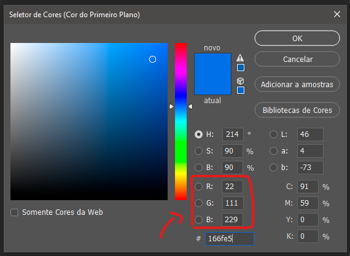
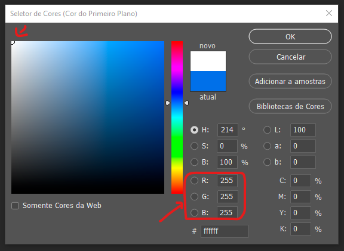

Conta-Gotas Grátis e Preciso para Capturar Qualquer Cor
Com essa ferramenta online, você pode obter o código de cor RGB, HSL ou HEX de qualquer ponto de uma imagem. Clique abaixo para inserir uma imagem e depois selecione qualquer ponto para obter a cor exata.
Clique aqui para inserir a imagem
PONTO DO MOUSE
COR SELECIONADA
Código de cor
Códigos de cor são representações numéricas usadas para descrever cores digitalmente. Um exemplo
comum é o modelo RGB — Vermelho, Verde e Azul.
O que é RGB?
RGB é o sistema de cores aditivas baseado nas cores luz: Red (vermelho), Green
(verde) e Blue (azul).
É utilizado em telas como monitores, TVs e câmeras digitais. As cores são criadas combinando
essas três cores em intensidades de 0 a 255.
Exemplo: RGB(255, 0, 0) é vermelho puro; RGB(0, 0, 0) é preto.


O que é HSL?
HSL significa Hue (tom), Saturation (saturação) e Lightness (luminosidade).
O tom é medido em graus, a saturação e a luminosidade em porcentagens. É mais intuitivo que o RGB
para ajustes visuais.
O que é HEX?
HEX é uma forma de representar cores com seis caracteres precedidos de “#”.
Os dois primeiros representam o vermelho, os dois seguintes o verde e os dois últimos o azul.
Exemplo: #FFFFFF é branco puro.